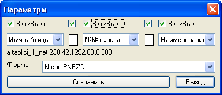

Команда: export-table-to-coord-file
Команда: export-table-to-coord-fileЭкспортирует координаты трассы из таблицы в файл формата CDR33 или Nicon.
В общем то работа с программой ограничивается двумя запросам. Запросит таблицу из которой брать координаты. (имеется в виду объект автокада "таблица" а не набор текстов и линий.) Для работы подойдут таблицы получаемые командами Координаты полилинии, Координаты точек.Команда: export-table-to-coord-file
 Выбери существующую таблицу с координатами:
Выбери существующую таблицу с координатами:
 указывает объект таблица
указывает объект таблица

Указывает параметры формирования имени точки - в верху галочками можно отключить любой элимент, ниже в списке выбора последовательность элиментов имени а так же символы разделители элиментов, еще ниже пример первой строки файла. Ниже можно выбрать формат создаваемого файла Никон, Сокиа или Лейка. Параметры сохраняются в чертеже.
стандартное окно сохранить как... для сохранения выходного файла с расширением соответствующим формату.
Имя файла по умолчанию формируется [имя чертежа]_[имя таблицы] Каталогом для сохранения файла по умолчанию предлагается расположение открытого файла если файл еще не был сохранен будет выбрана папка Мои документы текущего пользователя.
выбирает место и имя сохраняемого файла
Длинна номера/имени ограничена всего 15-ю символами не стоит увлекаться именами таблиц и наименованиями содержищими много символов, программка конечно обрежет лишнее, но вряд ли вам после этого станет это имя понятнее. К тому же, даже если прибор русифицирован не факт что русские символы в номере/имени точки или описании будут отображаться как надо (я проверял) поэтому все русские буквы при записи в файл будут транслитированы (сад -> sad).
В планах переделать интерфейс как в Экспорт точек в файл координат.